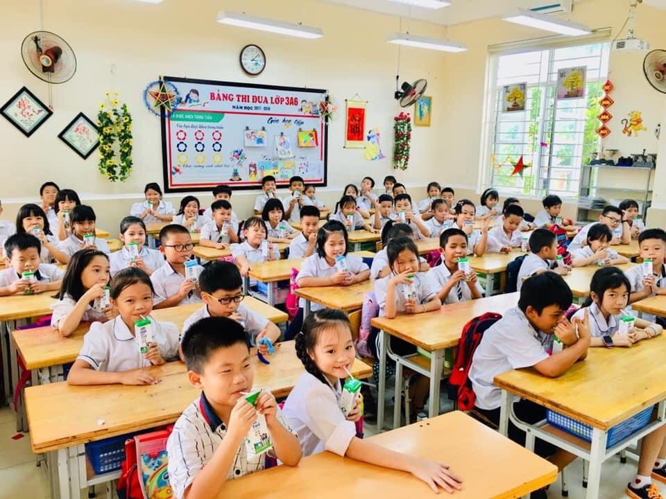
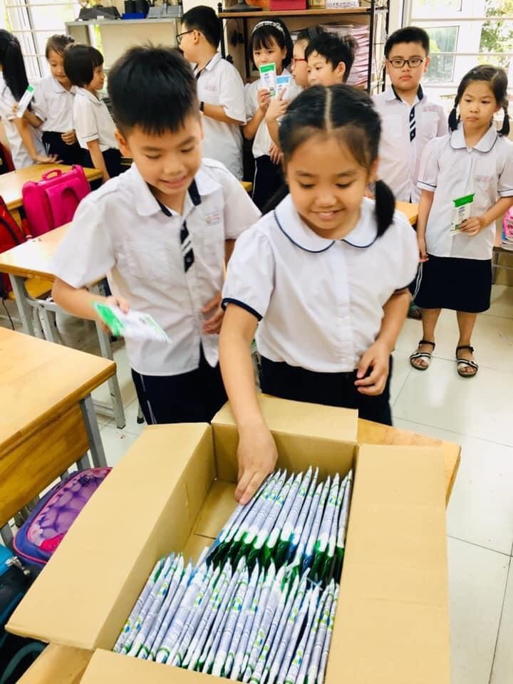

TRƯỜNG TIỂU HỌC YÊN SỞ THỰC HIỆN TỐT CHƯƠNG TRÌNH SỮA HỌC ĐƯỜNG
Sữa học đường là một chương trình nhân văn, nhằm thực hiện hóa “Giấc mơ Sữa Việt” và mong muốn “cải thiện tình trạng dinh dưỡng của trẻ em mẫu giáo và tiểu học” thông qua hoạt động cho trẻ uống sữa hàng ngày nhằm giảm tỉ lệ suy dinh dưỡng, nâng cao tầm vóc, thể lực của trẻ em Việt Nam góp phần phát triển nguồn nhân lực trong tương lai của đất nước. Sau hơn 1 năm học thực hiện chương trình Đề án Sữa học đường, hầu hết phụ huynh và học sinh trường Tiểu học Yên Sở đều hiểu được ý nghĩa của chương trình và tích cực tham gia.
Để công tác triển khai Đề án sữa học đường đạt kết quả tốt, lãnh đạo nhà trường đã phối hợp với các bộ phận trong trường xây dựng kế hoạch triển khai, phân công nhiệm vụ cụ thể cho tất cả các thành viên cùng phối hợp tham gia. Mọi sự chuẩn bị về kho chứa, phương án tiếp nhận, bảo quản và tổ chức cho học sinh uống sữa, xử lý vỏ hộp,… được tập thể cán bộ, giáo viên, nhân viên nhà trường thực hiện chu đáo ngay từ những ngày đầu tiên.
Những tháng đầu tiên khi triển khai Đề án Sữa học đường, nhà trường còn gặp nhiều lúng túng trong khâu xử lý vỏ hộp sữa vì tốn nhiều thời gian công sức hơn bình thường. Nhiều phụ huynh còn băn khoăn về giá cả, chất lượng sữa trong chương trình. Tuy nhiên, vì ý nghĩa của chương trình cũng như vì sự phát triển về thể chất, trí tuệ của học sinh; tập thể cán bộ, giáo viên, nhân viên của nhà trường đã nỗ lực vượt qua để thực hiện Đề án. Tính đến nay, tỉ lệ học sinh tham gia uống sữa của nhà trường đạt 97,3%. Hầu hết các bậc phụ huynh đều rất vui mừng, phấn khởi, bởi lẽ các con được uống sữa đảm bảo chất lượng đều đặn mỗi ngày, góp phần cải thiện thể lực, trí lực cho bản thân. Mặt khác, phụ huynh lại được tiết kiệm chi phí không nhỏ khi chỉ phải chi trả một nửa giá thành so với giá ngoài thị trường. Hơn nữa, các con học sinh của nhà trường rất háo hức, mong chờ tới giờ được uống sữa. Sau khi uống xong, các con còn được các cô hướng dẫn cách gấp gọn vỏ hộp sữa hay biết sử dụng vỏ hộp sữa để sáng tạo nên nhiều đồ chơi thú vị, vật dụng trang trí,… Tính đến thời điểm hiện tại, phụ huynh học sinh đã tin tưởng tuyệt đối vào chương trình và chất lượng sữa học đường.
Học sinh trong giờ uống Học sinh trong giờ uống sữa học đường
Có được kết quả này là nhờ công tác tuyên truyền của nhà trường, sự phối hợp vào cuộc của các cấp, các ngành, sự tích cực hưởng ứng từ phía đội ngũ cán bộ, giáo viên, nhân viên nhà trường và sự đồng thuận từ phía cha mẹ học sinh. Qua hơn 1 năm thực hiện, chương trình đã đạt được những kết quả hết sức tích cực và đã đi vào quy trình. Nhà phân phối có trách nhiệm bảo quản thật tốt và giao sữa đúng thời hạn. Công tác triển khai Chương trình Sữa học đường được thực hiện một cách khoa học, an toàn từ khâu tiếp nhận, giao nhận sữa, lưu kho, triển khai uống sữa tại lớp đến khâu xử lý vỏ hộp sau khi sử dụng,..
Nhìn chung, việc triển khai chương trình sữa học đường không chỉ mang tính nhân văn đối với sự phat triển của trẻ mà còn mang ý nghĩa xã hội to lớn khi nhận được sự quan tâm, đồng lòng hưởng ứng từ các cấp, các ngành, của tập thể nhà trường và của cha mẹ học sinh. Trường Tiểu học Yên Sở - quận Hoàng Mai sẽ tiếp tục tích cực hưởng ứng chương trình để toàn bộ học sinh được uống sữa nhằm giảm tỉ lệ suy dinh dưỡng, nâng cao tầm vóc, thể lực, trí lực cho học sinh nhà trường, góp phần phát triển nguồn nhân lực tương lai cho đất nước.